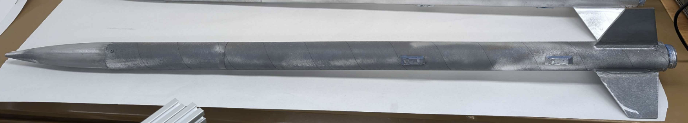
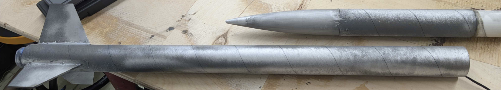

L1 Rocket
A rocket that I successfully built and launched for a Level 1 certification. This page is currently a work in progress!
A rocket that I successfully built and launched for a Level 1 certification. This page is currently a work in progress!

This is an L1 rocket named "Platt"inum that I built and successfully launched on 11/14/2026. I spent time working on this rocket throughout the first two and a half months of my first semester. I built this rocket from scratch, 3D printing or laser cutting some initial parts like the nosecone and fins. I assembled most of the rocket through copious amounts of epoxy, resulting in two primary parts: the fuselage and nosecone, which you can see below.
These were attached with string to a parachute stowed inside the fuselage. I used a H283 motor that came with a timed black powder charge, so after running out of fuel and reaching apogee, the rocket would split into two and release the parachute in the process. It was really fun to create and launch this rocket!